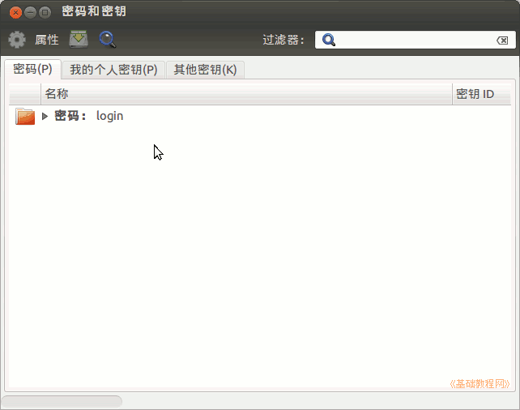
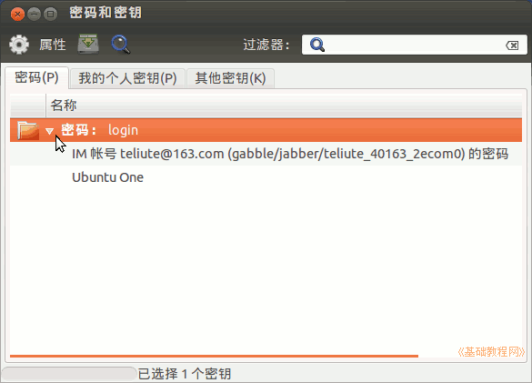
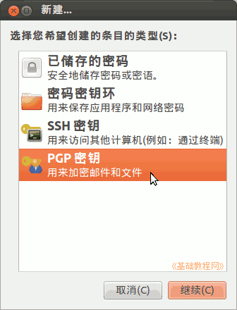
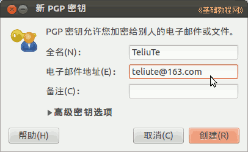
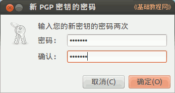
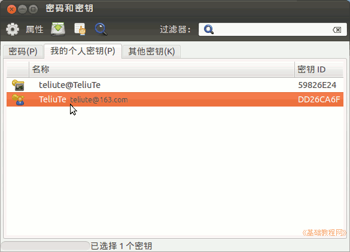
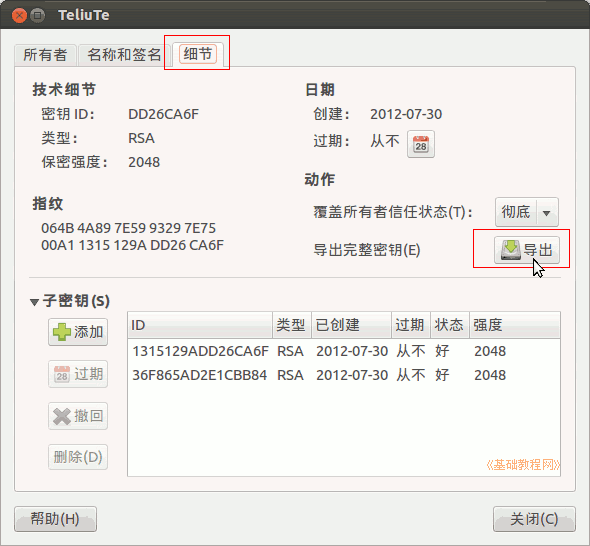
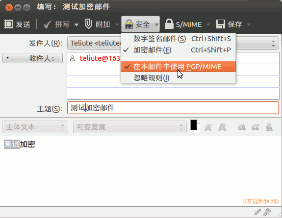
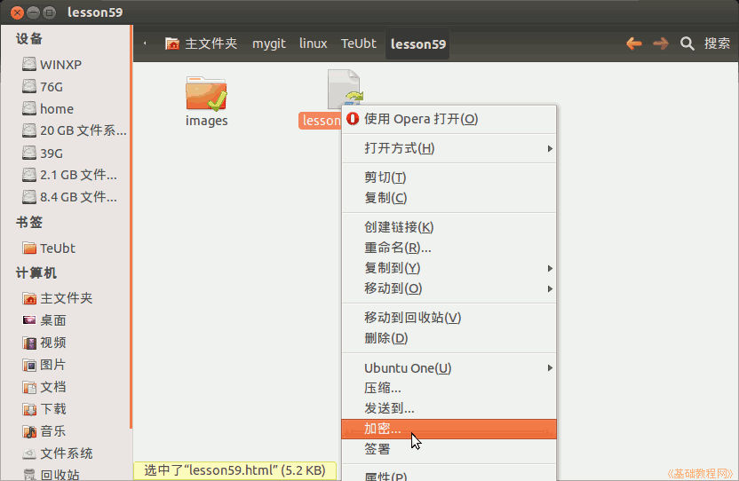

Ubuntu 入门操作指南
作者：TeliuTe 来源：基础教程网
五十九、密码和密钥 返回目录 下一课在这里，您可以查看和创建自己的密钥，并用它来加密/解密文件和邮件；
1、密码和密钥
1）点击主按钮，在搜索中输入 seahorse ，打开程序，或者依次点“主按钮、所有程序、过滤结果、系统、密码和密钥”；

2）窗口中包含系统密码和个人密钥，以及其他密钥，点开 login 里面存储了一些自动开启的程序密钥；

3）点菜单“文件 - 新建”，打开创建密钥对话框，在出来的密钥类型中，选 PGP 密钥，然后点“继续”；

4）输入自己的邮件用户名、邮箱地址点“创建”；

5）输入密钥的密码，这个密码用于使用密钥的时候，也就是密钥+密码的双保险；

6）稍候返回到主窗口，在“我的个人密钥”中，就有了这个密钥；

7）选中密钥，点工具栏上的“属性 - 细节”可以查看密钥信息，点“导出”备份一下，是一个.asc文件；

8）在发送邮件时，可以用这个密钥来加密或签名，点“安全”按钮，打勾“加密邮件”，收到以后，必须要用这个密钥的密码来解密，然后才能查看邮件；

9）安装 seahorse-nautilus 后，还可以加密文件或文件夹；

10）点菜单“远程 - 同步并发行密钥”可以上传自己的公钥，详细请参阅： http://teliute.org/linux/TeGnome/lesson63/lesson63.html；
本节学习了密码和密钥的基础知识，如果你成功地完成了练习，请继续学习下一课内容；
本教程由86团学校TeliuTe制作|著作权所有
基础教程网：http://teliute.org/
美丽的校园……
转载和引用本站内容，请保留作者和本站链接。